Concepto
Tazón para Dos · Tinieblas es la versión nocturna de la misma casa. La usamos cuando la mesa juega Mago: La Ascensión, Hombre Lobo: El Apocalipsis, Changeling: El Ensueño o cuenta leyendas urbanas de Bogotá y Engativá: el humedal Jaboque, el río, las calles del barrio. El tazón, las fuentes, la sombra dura, los puntos y las diagonales son los de siempre. Lo que cambia es la luz: luna, niebla, vela y humedal, con geometría de inspiración muisca.
«Tinieblas» nombra a la vez el Mundo de Tinieblas y la hora en que se cuentan las leyendas. Va siempre después del nombre madre, nunca solo.
Paleta
Cada color sale de uno del kit original. Los fondos vienen de la tinta y la crema, y los acentos son la turquesa, el coral y el sol vistos de noche. Ningún color lleva degradado.
Fondos
Abismo#110D18 · --abismoFondo más hondo, contraportadas.
Noche#1C1629 · --nocheFondo principal de pantalla y página.
Niebla#2B2340 · --nieblaTarjetas, recuadros, paneles.
Pergamino#E9DDC1 · --pergaminoTexto sobre oscuro; papel de impresión.
Pergamino viejo#D9C9A3 · --pergamino-viejoRecuadros sobre pergamino.
Acentos
Musgo de humedal#7FA68C · --musgoEx turquesa. Etiquetas, divisores.
Musgo profundo#3E5E50 · --musgo-profundoBloques con texto pergamino.
Sangre seca#9E3A48 · --sangreEx coral. Bloques, sombras, esquina.
Coral ceniza#E07D84 · --coral-cenizaEl coral cuando es texto sobre oscuro.
Oro de vela#E3B35C · --velaEx sol. Franjas, destellos, botones.
Ámbar#7E5A1E · --ambarEl oro cuando es texto sobre pergamino.
Texto
Luna#CFCADF · --lunaTexto secundario sobre oscuro.
Ceniza#A39AB0 · --cenizaPies de foto, bordes sobre oscuro.
Tinta#28203B · --tintaLa original, para texto impreso.
Tinta suave#5A4E66 · --tinta-suaveAtenuado sobre pergamino.
Contraste
Cálculo WCAG 2.1 generado por tools/build.py. El texto normal pide 4,5:1 (AA) y el grande, 3:1. Las filas marcadas con «NO» documentan los usos prohibidos: el oro y la sangre sirven como fondo o adorno, no como texto.
| Texto | Fondo | Ratio | WCAG | Uso | |
|---|---|---|---|---|---|
| Aa | Pergamino #E9DDC1 | Abismo #110D18 | 14.23 | AAA | Texto principal |
| Aa | Pergamino #E9DDC1 | Noche #1C1629 | 13.02 | AAA | Texto principal |
| Aa | Pergamino #E9DDC1 | Niebla #2B2340 | 10.99 | AAA | Texto en tarjetas |
| Aa | Luna #CFCADF | Noche #1C1629 | 11.01 | AAA | Texto secundario |
| Aa | Ceniza #A39AB0 | Noche #1C1629 | 6.53 | AA | Pies de foto, etiquetas |
| Aa | Ceniza #A39AB0 | Niebla #2B2340 | 5.51 | AA | Atenuado en tarjetas |
| Aa | Oro de vela #E3B35C | Noche #1C1629 | 9.09 | AAA | Destacados, enlaces |
| Aa | Musgo de humedal #7FA68C | Noche #1C1629 | 6.47 | AA | Destacados |
| Aa | Coral ceniza #E07D84 | Noche #1C1629 | 6.22 | AA | Avisos, rótulos |
| Aa | Coral ceniza #E07D84 | Niebla #2B2340 | 5.25 | AA | Rótulos en tarjetas |
| Aa | Abismo #110D18 | Oro de vela #E3B35C | 9.93 | AAA | Botones y píldoras |
| Aa | Abismo #110D18 | Musgo de humedal #7FA68C | 7.07 | AAA | Píldoras |
| Aa | Pergamino #E9DDC1 | Sangre seca #9E3A48 | 4.94 | AA | Texto en bloque sangre |
| Aa | Pergamino #E9DDC1 | Musgo profundo #3E5E50 | 5.33 | AA | Texto en bloque musgo |
| Aa | Tinta (original) #28203B | Pergamino #E9DDC1 | 11.45 | AAA | Texto impreso |
| Aa | Tinta suave #5A4E66 | Pergamino #E9DDC1 | 5.73 | AA | Atenuado impreso |
| Aa | Sangre seca #9E3A48 | Pergamino #E9DDC1 | 4.94 | AA | Titulares impresos |
| Aa | Ámbar #7E5A1E | Pergamino #E9DDC1 | 4.62 | AA | Oro como texto impreso |
| Aa | Musgo profundo #3E5E50 | Pergamino #E9DDC1 | 5.33 | AA | Musgo como texto impreso |
| Aa | Tinta (original) #28203B | Pergamino viejo #D9C9A3 | 9.44 | AAA | Recuadros impresos |
| Aa | Oro de vela #E3B35C | Pergamino #E9DDC1 | 1.43 | No | NO: oro sobre pergamino |
| Aa | Sangre seca #9E3A48 | Noche #1C1629 | 2.64 | No | NO: sangre como texto en la noche |
| Aa | Pergamino #E9DDC1 | Musgo de humedal #7FA68C | 2.01 | No | NO salvo titular grande con sombra |
Logotipo
Son los SVG del kit original recoloreados, no un dibujo nuevo. «Tinieblas», con una luna creciente, va en la fila del descriptor. Sobre fondo oscuro el aro del sello es oro de vela; sobre pergamino, tinta.
logotipo-horizontal-tinieblas.svg · fondo transparente
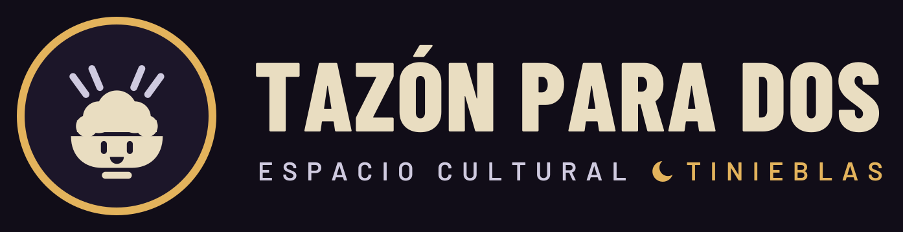
…-tinieblas-fondo.svg · con fondo abismo
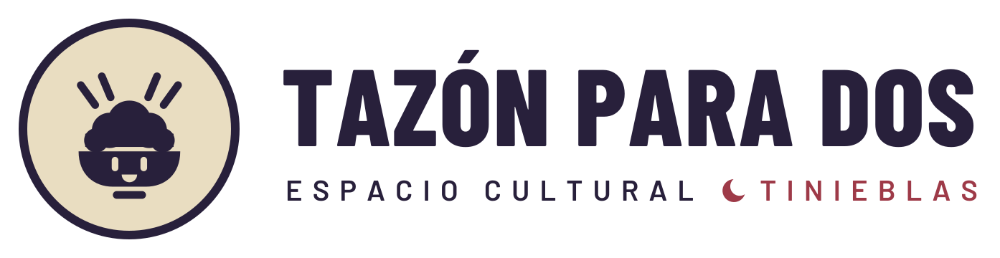
…-tinieblas-pergamino.svg · para imprimir
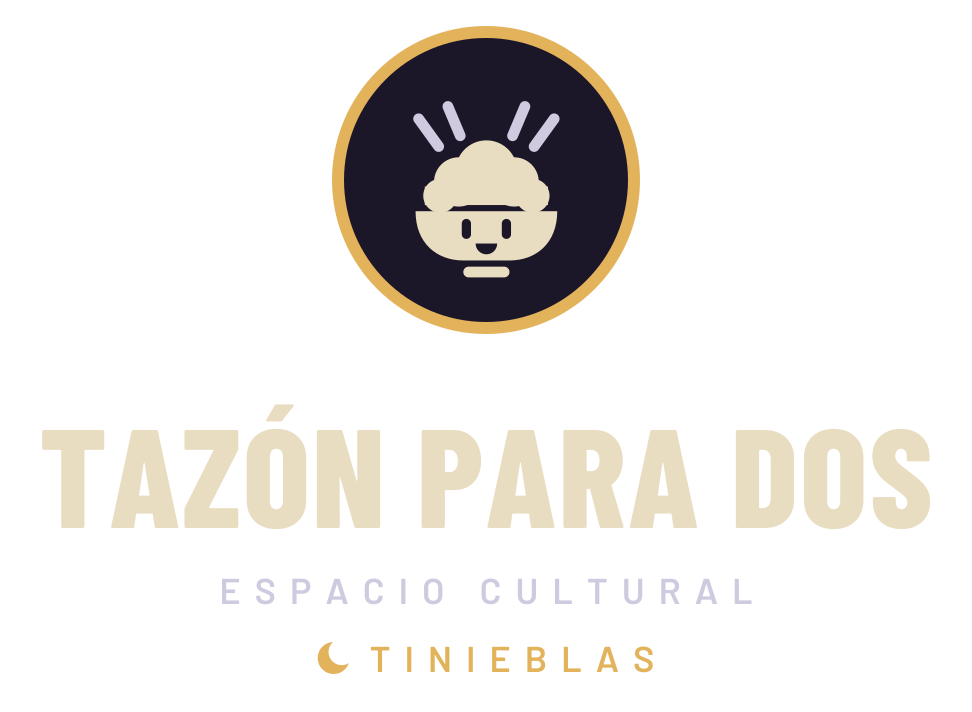
logotipo-apilado-tinieblas.svg
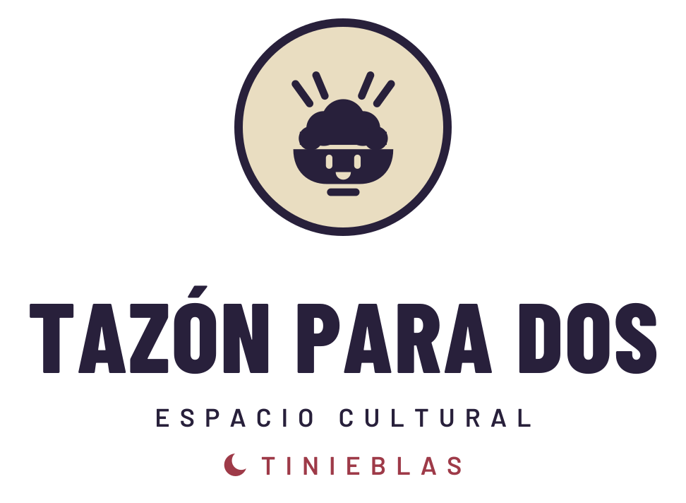
logotipo-apilado-tinieblas-pergamino.svg
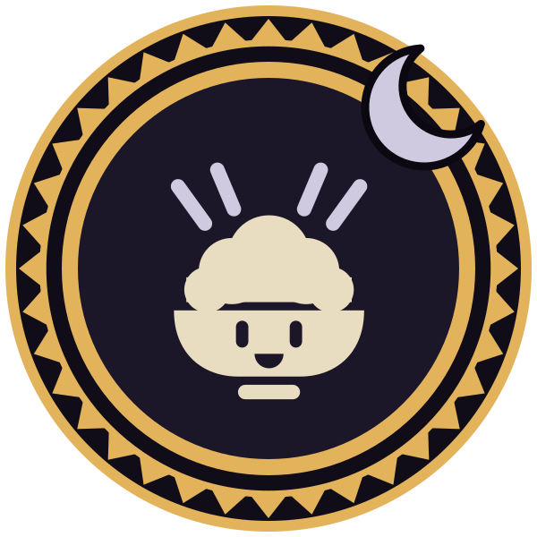
sello-luna.svg · sello con aro muisca y luna
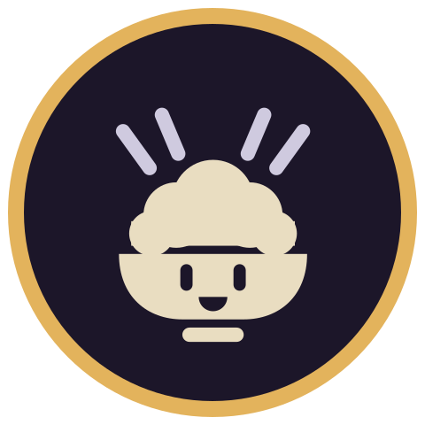
sello-tinieblas.svg
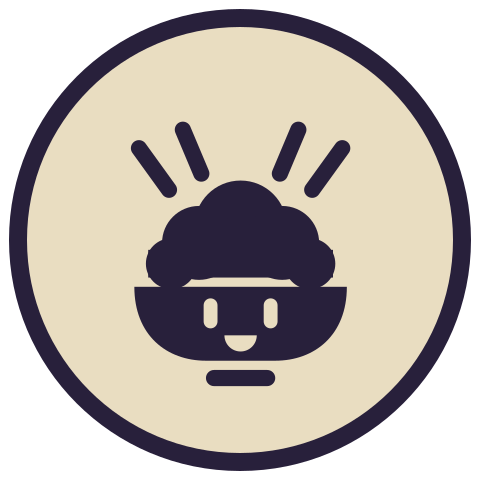
sello-tinieblas-pergamino.svg
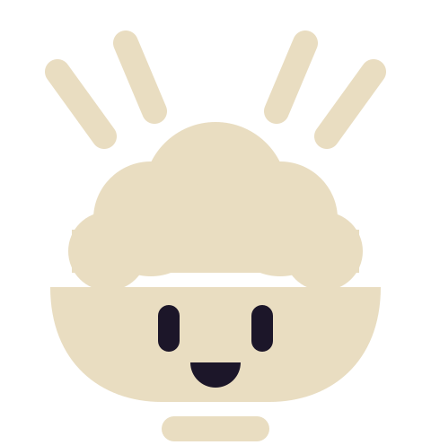
mascota-tinieblas.svg · y favicon.svg
Tipografía
Es la del sitio web, sin letras góticas: el misterio lo ponen el color y los ornamentos. El logotipo conserva Barlow Condensed en contornos.
Space Grotesk 700 · titulares · sombra dura sangre
Cuentan que en el humedal, cuando baja la neblina, alguien sigue tocando la puerta de la casa vieja. Nos sentamos a la mesa para averiguar quién.
DM Mono · etiquetas · 0,14 emDM Sans 400 / 700 · texto corrido en pergamino
Sistema gráfico
Se conservan las reglas del kit. La sombra dura va desplazada y sin desenfoque. La trama de puntos es de 22 px. Las diagonales suben de izquierda a derecha con franja de oro de vela, y la esquina lleva un triángulo sangre con otro de oro.
Sombra dura · 6 px contorno, sin desenfoque
Sombra sangre · tarjetas sobre noche
Trama de puntos
Diagonal · sube a la derecha, franja vela
Triángulo de esquina · sangre + vela
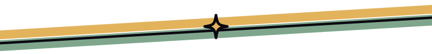
divisor.svg · musgo + vela + destello
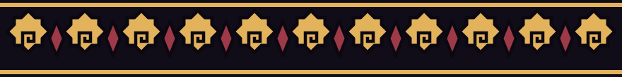
greca-muisca.svg · banda de rombos escalonados, repetible en horizontal
Ornamentos
Son ilustraciones planas con contorno casi negro de 8–10 px, como las del kit. Pon un objeto principal con 2 a 4 secundarios. Cada línea de juego tiene su motivo, y los motivos andinos son geometría, no símbolos sagrados inventados.
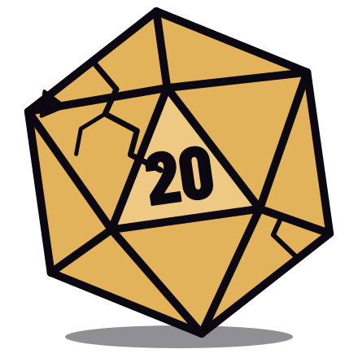
d20-agrietado.svg · el dado de siempre, con grietas
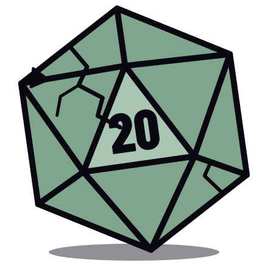
d20-agrietado-musgo.svg
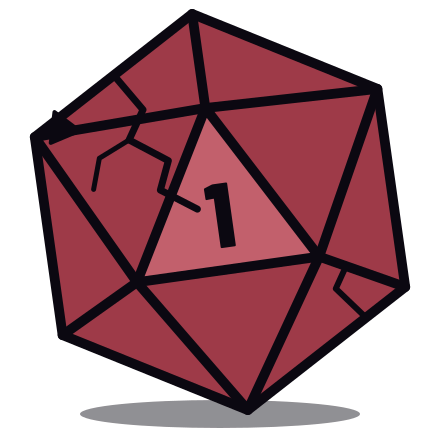
d20-pifia.svg · el 1 que nadie quiere
luna.svg · creciente, con destellos
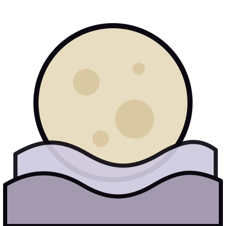
luna-llena.svg · Hombre Lobo
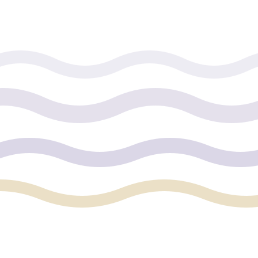
niebla.svg · bandas para cubrir bordes
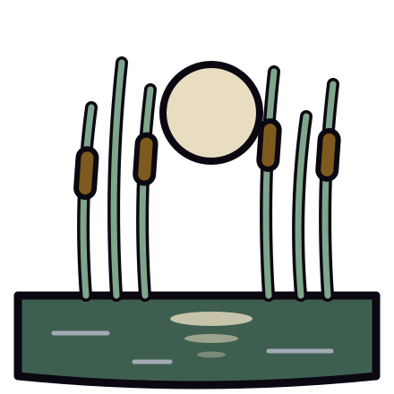
humedal.svg · juncos y luna en el agua (Jaboque)
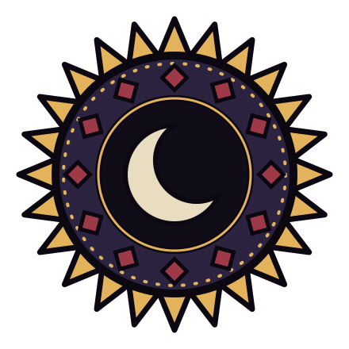
chia.svg · medallón de la luna muisca
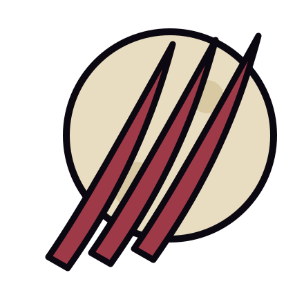
zarpazo.svg · Hombre Lobo
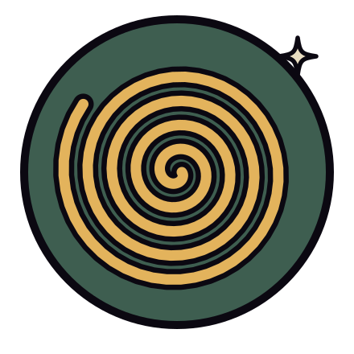
espiral.svg · Mago
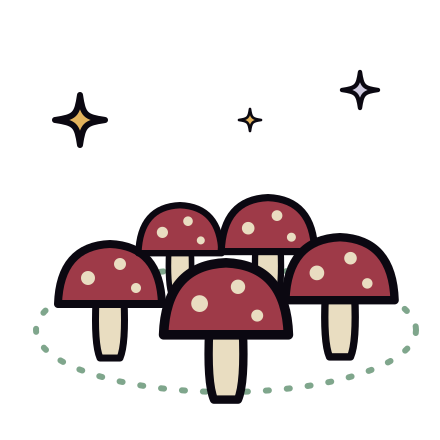
anillo-hongos.svg · Changeling
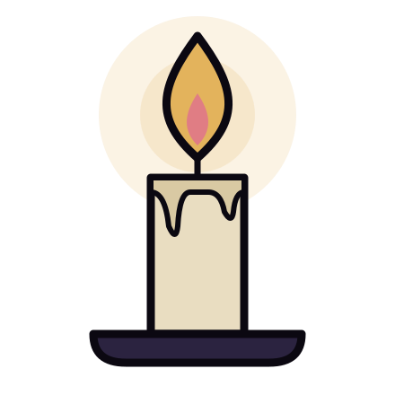
vela.svg · leyendas, narración
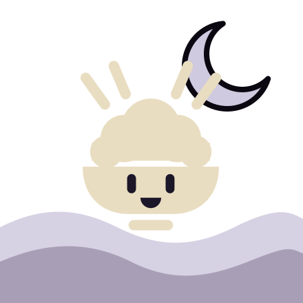
tazon-en-la-niebla.svg · la mascota original
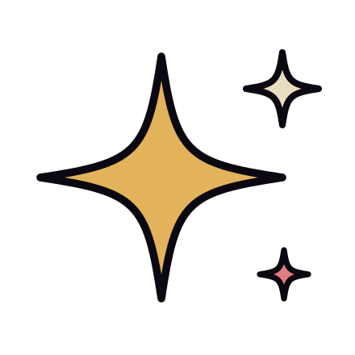
destello.svg · 2–4 por pieza
Íconos
Son íconos de línea en una grilla de 64 px, con trazo de 4 px y puntas redondeadas, igual que los originales. Usan currentColor. El sprite assets/iconos/sprite.svg trae los 13 nuevos y los 21 heredados: <svg><use href="assets/iconos/sprite.svg#i-luna"/></svg>.
Heredados del kit original
Tema para pdf-historias
tema-tinieblas.css se aplica encima del CSS de D:\herramientas\pdf-historias\maquetar.py y cambia páginas, cabeceras, pies, capitulares, recuadros, leyendas, portada, contraportada y la versión web. No hace falta tocar el Markdown, y el color de la portada (color: en el front matter) se traduce a su versión nocturna. Para imprimir está tema-tinieblas-pergamino.css, con páginas pergamino y portadas oscuras.
Noche · pantalla


Pergamino · impresión


Cómo se conecta
# opción propuesta para maquetar.py (aún no existe: ver README) python -I maquetar.py historia.md --tema D:\tazon-para-dos-tinieblas\tema-tinieblas.css python -I maquetar.py historia.md --web web --tema …\tema-tinieblas.css # hoy, sin tocar la herramienta python -I tools\probar_tema.py --md historia.md --tema tema-tinieblas.css --web
Usos correctos e incorrectos
Lo oscuro debe sentirse como una mesa a la luz de una vela: cálido, cercano y un poco inquietante, nunca violento.
SÍTexto largo en pergamino sobre noche (13:1).
NOOro de vela como texto sobre pergamino (1,4:1).
SÍSombra dura sin desenfoque, en contorno o sangre.
NODegradados, brillos y sombras difusas.
SÍEl logo original recoloreado, con «Tinieblas» en el descriptor.
NOGirar, estirar, recolorear fuera de la paleta o redibujar el tazón.
Sí
- Partir de las piezas del kit y cambiar solo la luz: noche, luna, vela, niebla.
- Oro de vela para lo que brilla: franjas, destellos, números, botones.
- Motivos muiscas como geometría (rombos escalonados, espirales, dientes), con respeto.
- Nombrar el territorio: Engativá, el humedal Jaboque, Bogotá.
- Ilustraciones planas y en grupos de 3 a 5 objetos.
No
- Rostros de personas reales sin consentimiento.
- Gore, sangre realista o calaveras: el miedo se sugiere con niebla y silencio.
- Oro de vela o sangre seca como texto pequeño (usa ámbar o coral ceniza).
- Fuentes góticas, de imitación medieval o «de terror».
- «Tinieblas» sin el nombre madre, o el tazón redibujado.